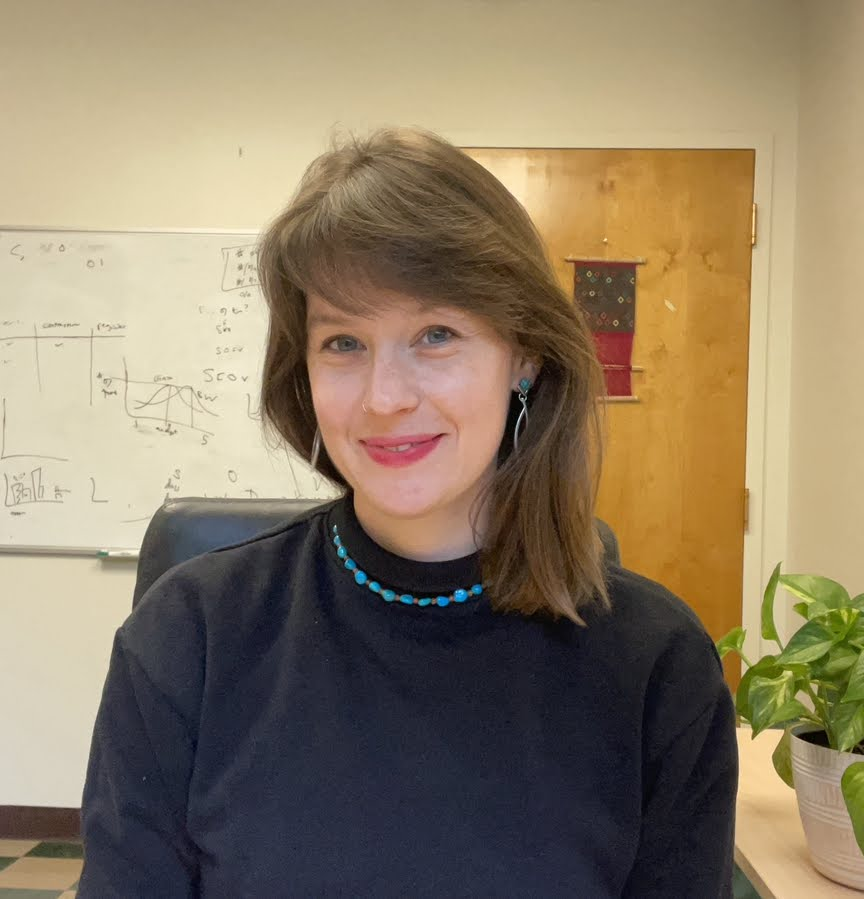

carol rose little
main
• research • teaching
• cv • poetry translations
•
email
• en español

I am an assistant professor of linguistics at the University of Oklahoma in the Department of Modern Languages, Literatures, and Linguistics. I am interested in syntax and its connections to the semantics and morphology interfaces. The empirical basis for my work comes from my original fieldwork with under-studied languages, primarily Ch'ol (Mayan, Mexico). Prior to coming to OU, I was a postdoctoral researcher in the Department of Linguistics at McGill University. I have a PhD in linguistics from Cornell University with graduate minors in American Indian and Indigenous Studies and Cognitive Science. Check out the OU Linguistics Program website here!
research and fieldwork
My research program brings together syntax, semantics and morphology, rooted in a strong commitment to fieldwork and language documentation. I investigate possible structural variations crosslinguistically and how these structures interface with semantic computation. My theoretical analyses draw on data collected from fieldwork with understudied languages, namely Ch'ol (Mayan, Mexico) and Mi'gmaq (Algonquian, Canada). I also have projects with Finnish and Indonesian. I have funded this work with various grants including a doctoral dissertation research improvement grant jointly funded by NSF's Documenting Endangered Languages and Linguistics programs. Here is a link to my dissertation and here is a link to data that my dissertation draws on at the Archive of the Indigenous Languages of Latin America (AILLA). Links to my articles, handouts and abstracts can be found here.
I also have experience translating and interpreting Ch'ol. Working with poet and author Charlotte Friedman, we have translated two collections of Juana Peñate's and have published poems from them in literary journals such as World Literature Today, The Arkansas International and Exchanges. I have ongoing in-person and zoom Ch'ol-English interpreting work in California criminal court.
recent and upcoming
- March 2023. Talk at Workshop On Morphology at Princeton (WOMP 2024).
- February 2024. Invited Conference talk at Form and Analysis in Mayan Linguistics 7. Mexico City.
- January 2024. Talk at the 54th Annual Meeting of the North East Linguistics Society (NELS), MIT: Evidence from impersonals for [+/-hearer].
- January 2024. Talk at Linguistics Society of America, NYC: The history of SIL in Oklahoma and implications for linguistics now.
- November 9, 2023. Norman Transcript article on the Mayan Film Festival! [article]
- November 9, 2023. Talk at CILLA X: Los impersonales: Una perspectiva desde los idiomas mayas
- November 2023. I am organizing a Mayan Film Festival at OU November 6, 14, and 15! More information here: [press release 1] [press release 2]
- September 2023. Two Ch'ol poems by Miriam Hernandez, translated by me and Charlotte Friedman in World Literature Today . [link]
- July 2023. Type-shifters in headless relative clauses manuscript available on lingbuzz. To Appear in Natural Language and Linguistic Theory With Scott AnderBois and Jessica Coon . [link]
- June 2023. Guest Contribution on church-state issues in public education in Oklahoma published in The Oklahoman. [link]
- April 21, 2023. A case for binary features from impersonals. Invited colloquium talk at Boston University.
- April 14, 2023. Judge of the Awards Committee at the 51st Annual Eve of Nations, organized by the International Advisory Committee at the University of Oklahoma.
- March 2023. Object case in the syntax of Impersonals. Invited talk at Externalizing Words: Mono- and Multilingual Perspectives.
- March 15, 2023. Invited lecture at CIESAS on quantification.
- February, 7 2023. New Ch'ol poetry translations published in On the Seawall! [link]
- February 6, 2023. Interactions between impersonals and first person plurals: Object case in Finnish. Invited talk at PSU Morpho-Syntax Syndicate.
- January 19, 2023. New Ch'ol poetry translations published in Asymptote! [link]
- January 13, 2023. Presentation at NELS 53 with Jessica Coon and Scott AnderBois.The iota type-shifter in headless relative clauses.
- December 2022. SALT paper published: Against a generalized quantifier analysis of certain quantity expressions in Ch’ol [link]
- November 2022. Paper published on classifiers with Mary Moroney and Justin Royer in Glossa! [link]